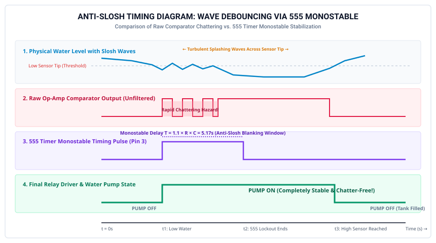

| Sl. | Component Name | Specifications / Part No. | Package | Qty | Price (₹) | Functional Role in Circuit |
|---|---|---|---|---|---|---|
| 1 | Dual Op-Amp IC | LM358N (Low Power Ground-Sense) | DIP-8 | 1 | ₹18 | Comparators & Schmitt trigger threshold detection |
| 2 | Precision Timer IC | NE555P / LM555CN | DIP-8 | 1 | ₹15 | Monostable 5.17s anti-slosh delay & bistable latch |
| 3 | Voltage Regulator | LM7805 (+5.0V, 1.0A Positive) | TO-220 | 1 | ₹15 | Regulated DC supply bus for analog control logic |
| 4 | Power Relay | 12V SPDT Relay (Songle SRD-12VDC-SL-C) | 5-Pin PCB | 1 | ₹35 | Electrical isolation & switching for water pump |
| 5 | Driver Transistor | BC547B (or 2N2222) NPN BJT | TO-92 | 2 | ₹8 | Saturated common-emitter switch (Ib > 2.5mA) |
| 6 | Flyback Diodes | 1N4007 (1000V, 1.0A Rectifier) | DO-41 | 2 | ₹4 | Antiparallel inductive spike suppression clamp |
| 7 | Submersible Pump | 12V DC Mini Submersible (3W, 240 L/H) | Motor unit | 1 | ₹160 | Lifts water from sump to overhead container |
| 8 | Sensing Probes | SS304 Stainless Steel Screws / Spokes | M4 Screws | 3 | ₹15 | Non-corrosive probes (Common, Low, High) |
| 9 | Timing Capacitor | 47 µF / 25V Radial Electrolytic | Can | 1 | ₹5 | Monostable RC timing constant: T = 1.1*Ra*C |
| 10 | Decoupling Caps | 0.33 µF (In), 0.1 µF (Out/Filt), 0.01 µF | Ceramic | 5 | ₹10 | 7805 RF bypass & probe line noise filtering |
| 11 | Precision Resistors | 10 kΩ 1/4W 1% Metal Film | Axial | 4 | ₹4 | Reference potential divider (1.67V & 3.33V) |
| 12 | Pull-Down Resistors | 100 kΩ 1/4W 5% Carbon Film | Axial | 2 | ₹2 | Converts probe conductivity to logic voltage levels |
| 13 | Hysteresis Resistor | 470 kΩ 1/4W 5% Carbon Film | Axial | 1 | ₹1 | Positive feedback creating Schmitt hysteresis band |
| 14 | Status LEDs & Buzzer | Red, Green, Blue, Amber + 5V Piezo Buzzer | Radial | 5 | ₹28 | Visual and audible multi-level status feedback |
| 15 | Prototyping Kit | MB-102 Breadboard, Jumpers & 12V Adapter | Assorted | 1 set | ₹395 | Power supply, wiring and rapid circuit prototyping |
| Origin Component & Pin | Destination Component & Pin | Wire Color | Functional Description |
|---|---|---|---|
| 12V Adapter Jack (+) | Breadboard Top Rail (+12V) & 7805 Pin 1 (IN) |
Red | Primary unregulated power bus for relay & motor |
| 12V Adapter Jack (–) | Breadboard Bottom Rail (GND) & 7805 Pin 2 |
Black | System common ground return reference |
| IC 7805 Pin 3 (OUT) | Breadboard Inner Rail (+5V V_CC) |
Orange | Regulated +5.00V DC bus powering LM358, NE555 & probes |
| Divider Node A (R1-R2) | LM358 Pin 6 (2IN-) [Inverting Input 2] | Purple | Preset V_ref_high = 3.33V (2/3 V_CC) for High Cutoff |
| Divider Node B (R2-R3) | LM358 Pin 2 (1IN-) [Inverting Input 1] | Blue | Preset V_ref_low = 1.67V (1/3 V_CC) for Low Pump Start |
| Tank COM Probe (Bottom) | +5V V_CC Rail | Orange | Conductive reference supplying +5V into water electrolyte |
| Tank LOW Probe (20% mark) | Node C (100k pull-down to GND + 0.1µF) | Cyan | Senses minimum water level (V_dry = 0.05V, V_wet = 4.88V) |
| Node C (Low Probe tap) | LM358 Pin 3 (1IN+) via 10k input resistor | Cyan | Feeds Non-Inverting Schmitt Trigger Comparator |
| LM358 Pin 1 (1OUT) | Feedback via 470k resistor to Pin 3 (1IN+) | White | Provides positive feedback for 78mV hysteresis noise immunity |
| LM358 Pin 1 (1OUT) | NE555 Pin 2 (TRIGGER) | Green | Active-low trigger: starts 555 monostable & sets pump ON |
| Tank HIGH Probe (85% mark) | Node D (100k pull-down to GND + 0.1µF) | Violet | Senses maximum water level for overfill protection |
| Node D (High Probe tap) | LM358 Pin 5 (2IN+) [Non-Inverting Input 2] | Violet | Feeds High-Level Comparator |
| LM358 Pin 7 (2OUT) | NE555 Pin 4 (RESET) & Pin 6 (THRESHOLD) | Gray | Active-low reset: shuts off 555 output & stops water pump |
| NE555 Pin 3 (OUTPUT) | BC547 Base via 1kΩ resistor (Rb) | Blue | Saturated base drive current (Ib = 2.90 mA) |
| BC547 Collector | 12V Relay Coil Pin 1 & 1N4007 Anode | Blue | Switched collector path energizing relay coil |
| +12V Supply Rail | 12V Relay Coil Pin 2 & 1N4007 Cathode | Red | Antiparallel flyback protection clamping coil kickback |
| Relay Contact (NO) | 12V Submersible Pump Positive Wire | Red | Supplies 12V DC power to pump motor when relay engages |
| Pump Negative Wire | GND Rail | Black | Motor current return path |

1. Place LM7805 on breadboard. Connect 0.33µF across Pin 1 (IN) & Pin 2 (GND); connect 0.1µF across Pin 3 (OUT) & Pin 2.
2. Apply +12V DC. Measure DMM voltage at Pin 3.
✓ PASS CRITERIA: Exact +5.00V ± 0.1V. No heating on 7805 tab.
1. Assemble three 10kΩ 1% resistors in series across +5V and GND.
2. Measure node voltages: Tap 1 (V_ref_high) and Tap 2 (V_ref_low).
✓ PASS CRITERIA: Tap 1 = 3.33V ± 0.03V; Tap 2 = 1.67V ± 0.03V.
1. Power LM358 (Pin 8 to +5V, Pin 4 to GND). Connect reference voltages to inverting inputs.
2. Connect sensing probes with 100k pull-downs and 470k feedback resistor. Test probe dry and immersed in water.
✓ PASS CRITERIA: Pin 1 swings 0.05V → 3.80V; hysteresis width = 78mV.
1. Wire NE555 with Ra=100k and C1=47µF. Trigger Pin 2 and measure Pin 3 high pulse duration with stopwatch.
2. Connect BC547, 12V relay, 1N4007 flyback diode, and 12V DC water pump.
✓ PASS CRITERIA: Monostable pulse = 5.17s ± 0.3s; relay snaps cleanly without chattering.

In student laboratory models, continuous DC potential through tap water causes anode oxidation (\(\text{Cu} \to \text{Cu}^{2+} + 2e^-\)), depositing green copper carbonate sludge within 48 hours. This design prevents galvanic fouling via three engineering safeguards:
| Fault Symptom | Probable Root Cause | Corrective Diagnostic Action |
|---|---|---|
| IC 7805 overheating rapidly (> 70°C) | 12V pump or relay coil mistakenly wired to +5V rail | Disconnect pump from 7805 output. Connect pump and relay coil strictly to the +12V unregulated DC input bus. |
| Relay chatters / buzzes rapidly on threshold | Missing Schmitt feedback resistor (Rf) or timing cap (C1) | Verify 470kΩ resistor is connected between LM358 Pin 1 and Pin 3; verify 47μF timing capacitor on 555 Pin 6/7. |
| Pump does not turn ON when tank is empty | BC547 pinout inverted or base resistor (Rb) disconnected | Verify BC547 pin orientation (TO-92 flat face: Left=C, Center=B, Right=E). Verify V_BE ≈ 0.7V and V_out(555) ≥ 3.5V. |
| Driver transistor burns out after pump stops | 1N4007 flyback diode missing or reversed polarity | Inspect 1N4007 across relay coil: Silver cathode band MUST face +12V rail. Reverse polarity creates a destructive dead short. |
| No voltage transition when water touches probe | Deionized/distilled water used (ultra-low conductivity) | Add a pinch of common salt (NaCl) to simulate tap mineral conductivity (100–500 μS/cm), or increase pull-down to 220kΩ. |